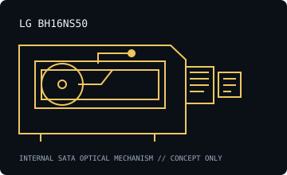

[ INDIVIDUAL COMPONENT // OPTICAL DRIVES ]
LG BH16NS50
Internal SATA 16× BD-R writer sold as the BH16NS50 model; compare the full label and OEM suffix before applying family ratings. Specifications are model-specific; maximum ratings depend on media, firmware and recording mode.

IDENTIFICATION: LG BH16NS50 · match the full model suffix and OEM label to the cited documentation before assigning capabilities.
Documented specifications
| Catalog subcategory | Blu-ray drives |
|---|---|
| Exact model | LG BH16NS50 |
| Drive type | Internal 16× Blu-ray Disc rewriter |
| Supported media and read/write formats | The documented BH16NS50/BH16NS40 OEM product listing identifies BD-R/BD-RE, DVD±R/RW, DVD-RAM, CD-R/RW read/write support. The family rating is BD-R up to 16×, BD-RE up to 2×, DVD±R up to 16×, DVD-RAM up to 5× and CD-R up to 48×; verify a specific revision/manual before relying on every speed. |
| Rated maximum speeds | Model listing rates BD-R up to 16×. Family documentation rates BD-RE up to 2×, DVD±R up to 16×, DVD-RAM up to 5× and CD-R up to 48×; these adjacent-family values are explicitly provisional pending exact product-label/manual confirmation. |
| Interface and mechanical fit | Internal Serial ATA (SATA), 5.25-inch half-height desktop mechanism. Confirm connector, front bezel, mounting screw positions, clearance and supply before installation; do not treat this summary as a dimensional drawing. |
| Host compatibility | Internal 5.25-inch SATA PC drive. Requires SATA data and power, a compatible host controller and OS optical-drive support. Blu-ray software/codec requirements apply. Check the OEM label, firmware, connector and actual mounting dimensions; region and supported media can vary by OEM/firmware. |
| Model-specific qualification | BH16NS50 is listed by an OEM retailer alongside BH16NS40, but this record does not treat them as one model. The paired LG BH16NS40 sheet alone does not prove every BH16NS50 revision shares the same matrix; verify BH16NS50 documentation before using uncommon media or archival tasks. |
Host setup and preservation notes
- Verify the exact drive label, firmware, SATA data/power connection and optical-device enumeration before testing media. Old vendor OS lists describe tested software at release, not a modern support guarantee.
- Read support is not write support. Use media bearing a format the exact drive/firmware supports; distinguish BD-ROM, BD-R and BD-RE, and do not infer BDXL/UHD capability from the Blu-ray logo alone.
- For preservation reads or recordings, log drive model/firmware, host controller, OS/software, media type, checksums and read/verification errors. Keep original discs unmodified and store them in protective cases in a clean, cool, dry location.
Manufacturer, standards and preservation sources
- Wootware — LG BH16NS40 / BH16NS50 OEM listingExplicitly identifies both model names and a 16× BD writer; bundled family listing requires suffix-specific verification.
- Hitachi-LG Data Storage — internal Blu-ray product informationManufacturer product information for LG internal Blu-ray writers; cross-check exact BH16NS50 manual and label.
- Blu-ray Disc Association — format specificationsDisc-format reference; it does not certify any individual drive.
- NIST — care and handling of optical discsPreservation and handling guidance; retain verified copies and logs.
Vendor speed ratings are maxima under specified media and modes, not guaranteed sustained rates or a warranty that aged media remains readable.